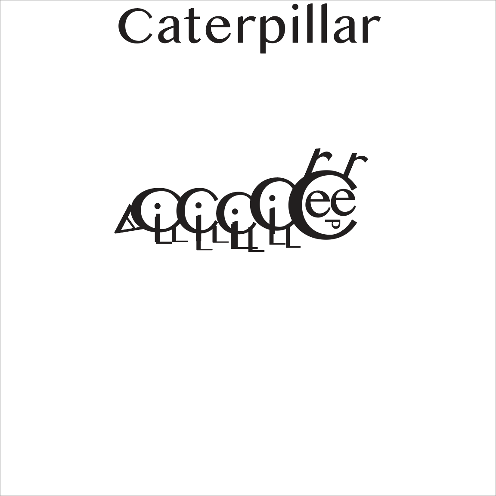
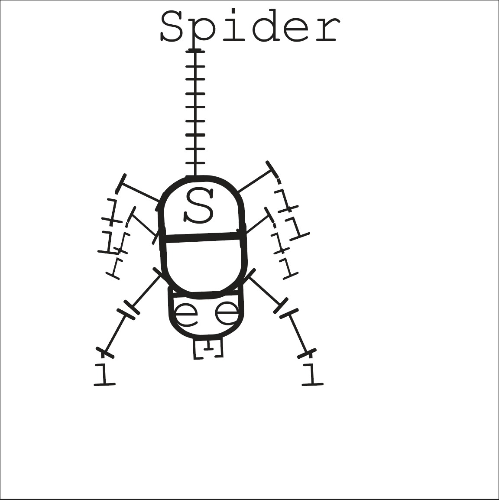

Bug Typography
For this typography based Illustrator project I had to create illustrations of insects using only the letters from each bug's name. I chose to design a beetle, caterpillar, and spider, and the challenge was figuring out how to manipulate and arrange the letterforms so they could function as both readable type and recognizable insect shapes.
For the beetle design, I used repeated letters from the word “Beetle” to build the body, legs, and antennas. I experimented with rotation, scaling, and symmetry to make the composition feel balanced while still keeping the insect visually clear. Since the project relied completely on typography, I had to pay close attention to spacing, alignment, and negative space to help define the overall form.
This assignment helped me better understand how typography can be used as illustration instead of just for communication. It also improved my skills in Illustrator by making me think more creatively about shape construction, composition, and how letterforms can become visual objects.